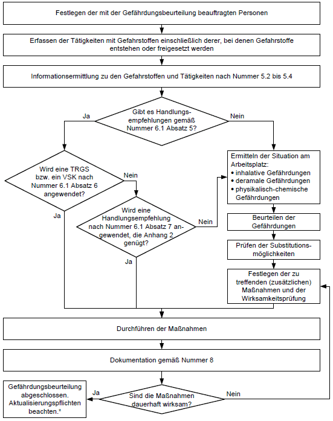

Anhang 1 zu TRGS 400
Vorschlag für eine Vorgehensweise bei der Gefährdungsbeurteilung für Tätigkeiten mit Gefahrstoffen

* Gemäß Nummer 4 Absatz 4 der TRGS 400 muss die Gefährdungsbeurteilung in regelmäßigen Abständen und bei gegebenem Anlass überprüft und ggf. aktualisiert
werden; das Überprüfungsintervall ist vom Arbeitgeber festzulegen.